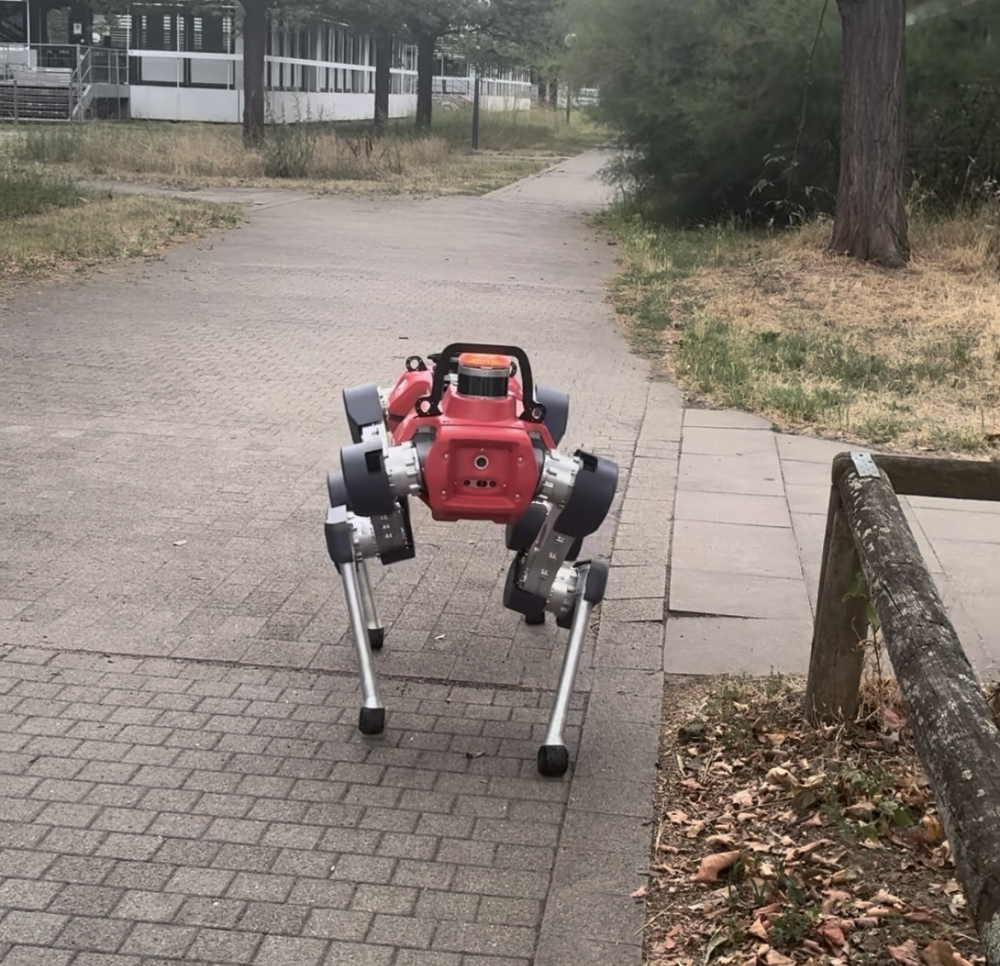

Multimodal scene understanding for a legged robot
Built the segmentation head of a Mixture-of-Experts model with early- and mid-fusion of RGB + LiDAR. Then I wired the output into a VDB terrain map and an A* planner for ANYmal to act on what it sees, validated on RViz2.